全日本カート選手権FS-125部門適用車両規定別紙X30125ccRL-CTAGエンジン仕様書
JAF の公式サイトではありません。JAF が公開する PDF を自動変換した非公式の検索用アーカイブです。記載内容は必ず JAF の原本 PDF で出典をご確認ください。 検索と AI 質問つきのビューアで開く
X30 125cc RL-C TaG
| X30 125 R L-C T aG cc | |||
| FEATURES - CARACTERISTIQUES | |||
| Cylinder volume Volume du cylindre | 123.67 cm³ | ||
| Bore Alésage | 54 mm | ||
| Max. bore Alésage max. | 54.28 mm | ||
| Stroke Course | 54 mm | ||
| Cooling system Système de refroidissement | Water À Eau | ||
| Inlet system Système d' admission | Reed valve À clapets | ||
| Cylinder / crankcase transfers n° N° de canaux cylindre / carter | 3 / 3 | ||
| Carburetor Tillotson Carburateur Tillotson | HW-27A (Venturi Ø27) | Inlet / exhaust ports number N° lumières admiss. / échapp. | 3 / 3 |
| Number of piston rings Nombre de segments | 1 | Combustion chamber shape Forme chambre de combustion | Spherical Sphèrique |
| Big end conr. bearing diam. Diamètre roulement tête de bielle | 20x26x15 | Selettra or PVL ignition Allumage Selettra ou PVL | Digital |
| Crankshaft bearing diam. Diamètre roulement du vilebrequin | 30x62x16 | Distance between conrod centers Longueur (entraxe) de la bielle | 102 mm |
| Small end conr. bearing diam. Diamètre roulement pied de bielle | 14x18x17.5 | RPM limiter Limiteur de régime | Yes Oui |
| Balancing shaft Arbre d’équilibrage du vilebrequin | Yes Oui | Electric starter Démarreur électrique | Yes Oui |
| DESCRIPTION OF THE MATERIAL DESCRIPTION DES MATERIAUX | PISTON | |
| Conrod material Matériau de la bielle | Steel Acier | Piston min. weight (ring incl.) 128 g Poids min. piston (avec segment) 128g |
| Crankshaft material Matériau du vilebrequin | Steel Acier | |
| Balancing shaft material Matériau de l’ arbre d’ équilibrage | Steel Acier | |
| Gears material Matériau des engrenages | Steel Acier | |
| Starter ring material Matériau de la couronne démarr. | Steel Acier | |
| Head material Matériau de la culasse | Aluminium | DISTANCE BETWEEN CONROD CENTERS ENTRAXE DE LA BIELLE |
| Cylinder material Matériau du cylindre | Aluminium | Min. weight 110 g Poids min. 110 g |
| Liner material Matériau de la chemise | Iron Fonte | |
| Crankcase material Matériau du carter | Aluminium | |
| Piston material Matériau du piston | Aluminium | |
| Piston rings material Matériau des segments | Iron Fonte | |
| Exhaust muffler material Matériau du pot d' échappement | Sheet-steel Tôle acier | |
| Ball-bearings Roulements | Type 6206 | |
| CRANKSHAFT - VILEBREQUIN | BALANCING SHAFT ARBRE D’ EQUILIBRAGE | |
| Min. weight 315 g Poids Min. 315 g | ||
| CRANKSHAFT BALL BEARINGS ROULEMENT À BILLES DU VILEBREQUIN | ||
P.3DIMENSIONS OF ALTERNATIVE CRANKSHAFT WITH ROLLER MAIN BEARINGS DIMENSIONS DU VILEBREQUIN ALTERNATIF AVEC ROULEMENTS À ROULEAUX
Crankshaft complete min. Weight 2220 g
Poids min. du vilebrequin
ROLLER MAIN BEARING ROULEMENTS À ROULEAUX DU VILEBREQUIN
| CYLINDER DEVELOPMENT - DEVELOPPEMENT DU CYLINDRE | |
| * CHORDAL READING LECTURE CORDALE O ANGULAR READING BY INSERTING A 0.2x5 mm GAUGE LECTURE ANGULAIRE PAR INSERTION D’UNE CALE DE 0.2x5 mm | |
| CYLINDER BASE VIEW VUE DE LA BASE DU CYLINDRE | CYLINDER CROSS SECTION VIEW VUE EN SECTION DU CYLINDRE |
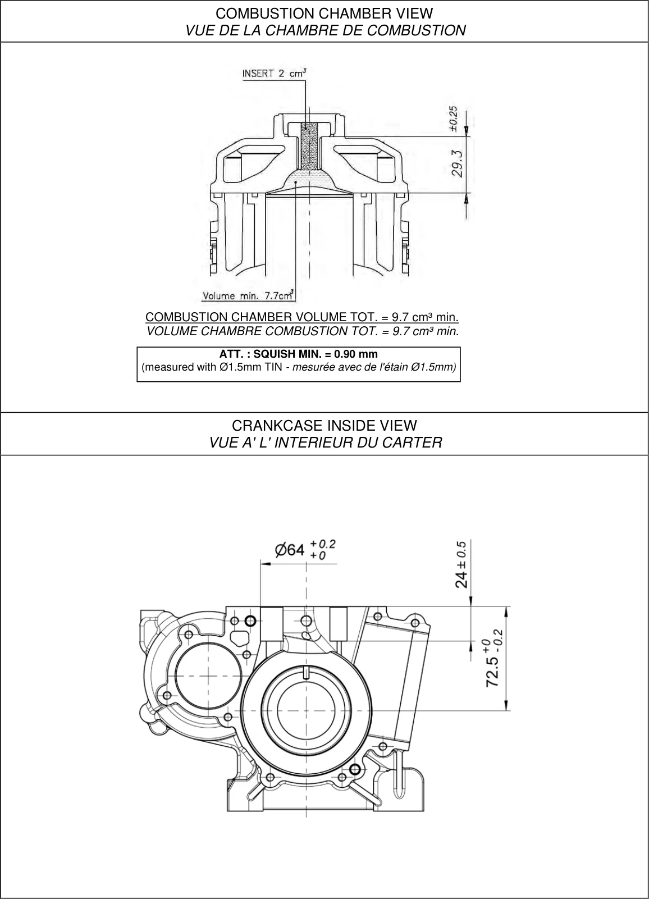
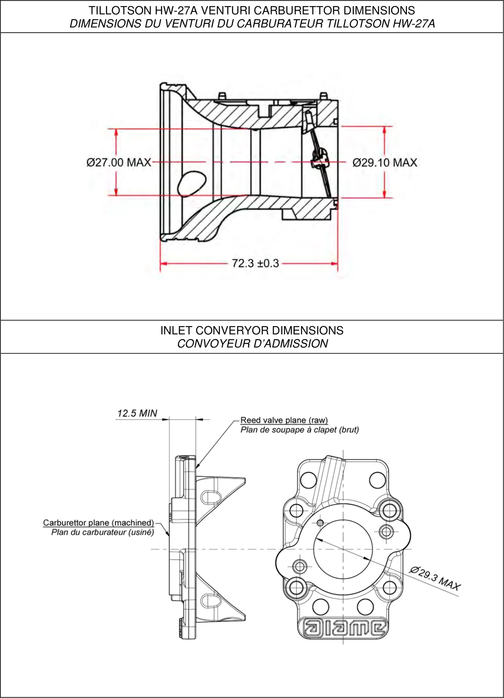
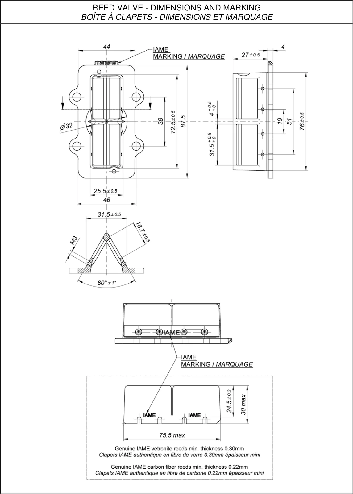
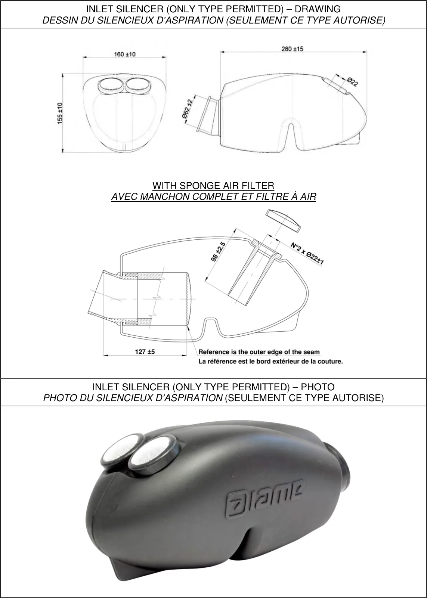
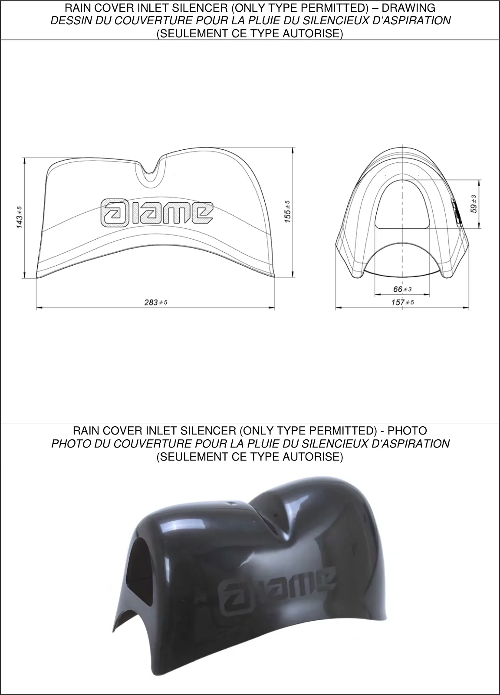
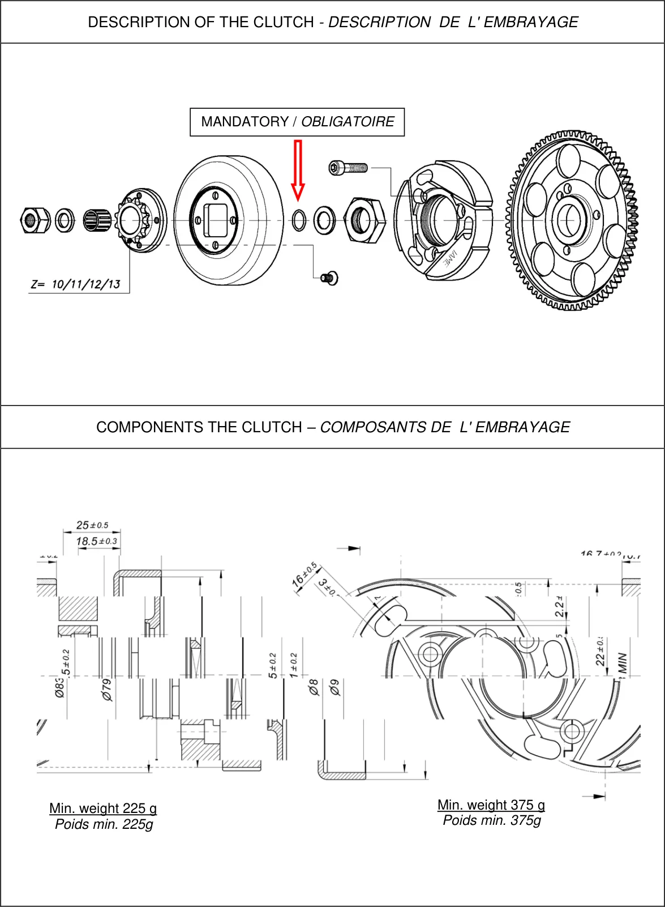
P.11EXHAUST MUFFLER VIEW AND DIMENSIONS VUE ET DIMENSIONS DU SILENCIEUX D’ECHAPPEMENT
The tape must follow the centerline of the weld at all points
Le ruban doit suivre l'axe de la soudure en tous points
Min. Weight 1.780 g
Poids min. 1.780 g
| ØA1: 110 ±1.5 Øext. | B2: 60 ±3 | ØE: 23.5 ±2 Øext. | ØI: 21 ±1 Øint. | N: 341 ±3 | T: 690 ±3 |
| ØA2: 102 ±1.5 Øext. | C: 219 ±3 | F: 36 ±2 | K: 170 ±3 | ØO: 21 ±1 Øint. | W: 170 ±3 |
| ØA3: 100 ±1.5 Øext. | D1: 90 ±3 | ØG: 35 ±1 Øext. | ØL: 42.5 ±1.5 Øext. | P: 50 ±10 | Q: 182 ±3 |
| B1: 60 ±3 | D2: 109 ±3 | H: 132 ±3 | M: 437 ±3 | S: 29 ±1.5 |
ATTENTION:
The dimensions “M”, “N” and “T” must be taken by steel tape measure 6mm wide. The dimensions “M” and “N” must be taken on the weld centerline. Les dimensions « M », « N » et « T » doivent être à l’aide d’un ruban à mesurer en acier 6 mm de large. Les dimensions « M », « N » doivent être prises sur l'axe de la soudure. The dimensions “Q” and “W” must be taken by steel tape measure 12mm wide. Les dimensions « Q » et « W » doivent être prises à l'aide d'un ruban à mesurer en acier 12 mm de large.
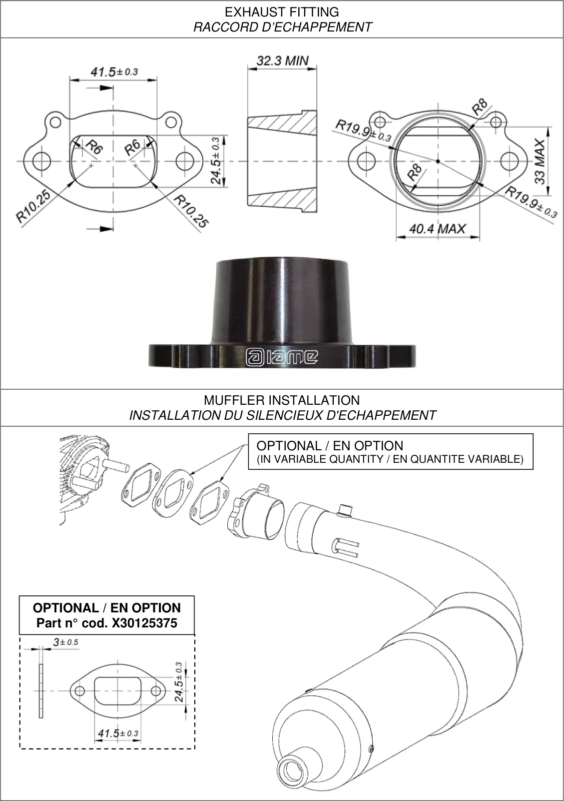
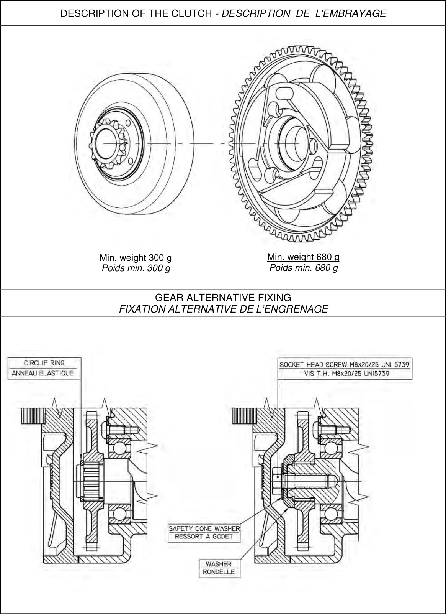
P.14RADIATOR DESCRIPTION AND SKETCH OF PARTS DESCRIPTION DU RADIATEUR ET SCHEMA ILLUSTRANT LES ELEMENTS
FRONT / AVANT REAR / ARRIERE
PAINTED AND NOT PAINTED
PEINT ET PAS PEINT
Ø16.5 ±1
315 ±10
REAR / ARRIERE FRONT / AVANT
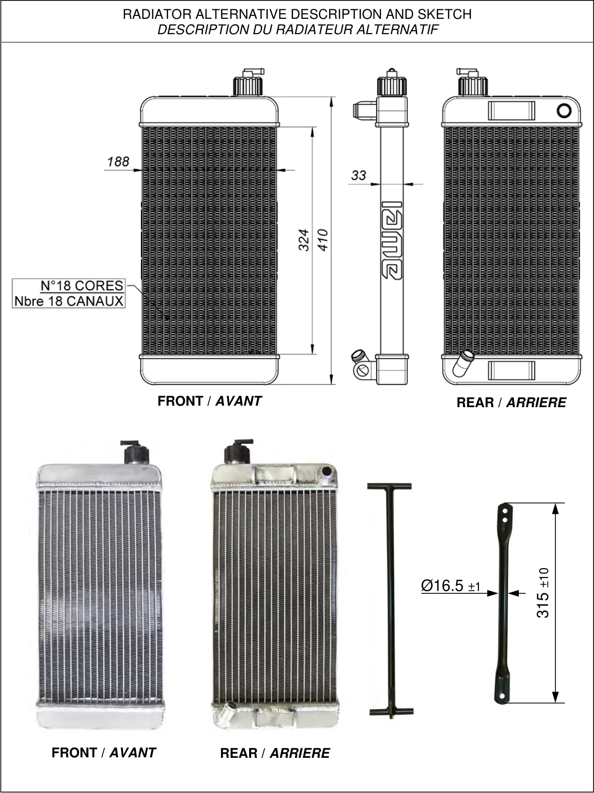
P.16RADIATOR ALTERNATIVE DESCRIPTION AND SKETCH
DESCRIPTION DU RADIATEUR ALTERNATIF
REAR / ARRIERE FRONT / AVANT
FRONT / AVANT REAR / ARRIERE
Ø16.5±1
335 ±10
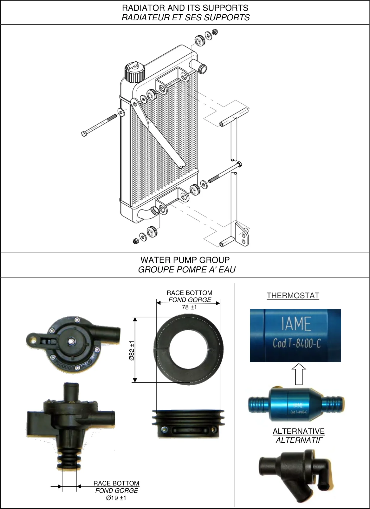
| RACE BOTTOM FOND GORGE | |||||
| 78 ±1 | |||||
| Ø82 ±1 | |||||
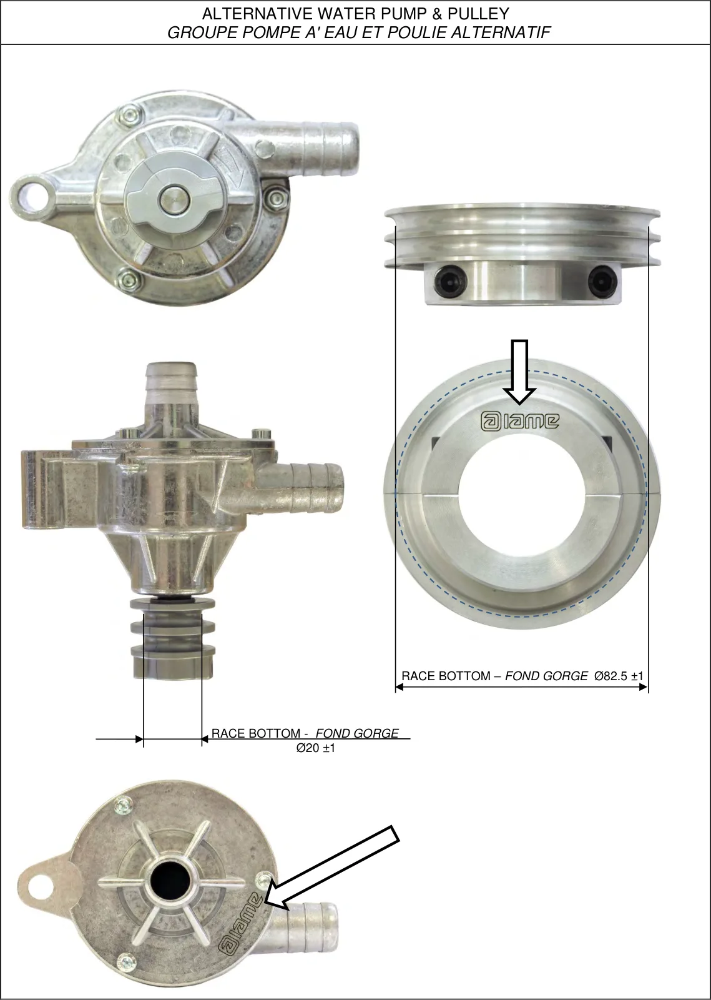
| PISTON IDENTIFICATION MARKING MARQUAGE D'IDENTIFICATION PISTON | |
| PHOTO IDENTIFICATION CONROD MARQUAGE D'IDENTIFICATION BIELLE | IDENTIFICATION BALANCING SHAFT MARKING MARQUAGE D'IDENTIFICATION ARBRE D’EQUILIBRAGE |
| VARIABLE |
| CRANKSHAFT IDENTIFICATION MARKING MARQUAGE D'IDENTIFICATION DU VILEBREQUIN | |
| VARIABLE VARIABLE | |
| GEAR COMMAND BALANCING SHAFT IDENTIFICATION MARKING MARQUAGE D'IDENTIFICATION ENGRENAGE ARBRE D’EQUILIBRAGE | SPROCKET IDENTIFICATION MARKING MARQUAGE D'IDENTIFICATION DU PIGNON |
| VARIABLE ALTERNATIVE MARKING/ MARQUAGE: X300125755 X300125755A X300125755B | VARIABLE VARIABLE |
| CLUTCH BODY IDENTIFICATION MARKING MARQUAGE D'IDENTIFICATION DU CORPS DE L’EMBRAYAGE | CLUTCH DRUM IDENTIFICATION MARKING MARQUAGE D'IDENTIFICATION DE LA CALOTTE |
| ALTERNATIVE FRICTION MATERIAL ------------------------------- MATÉRIAU DE FRICTION ALTERNATIVE VARIABLE | |
| STARTER RING IDENTIFICATION MARKING MARQUAGE D'IDENTIFICATION DE LA COURONNE DE DEMARRAGE | STARTER IDENTIFICATION MARKING MARQUAGE D'IDENTIFICATION DU DEMARREUR |
| VARIABLE | VARIABLE |
| REED GROUP & PETALS IDENTIFICATION MARKING MARQUAGE D'IDENTIFICATION DE LA BOÎTE À CLAPETS & CLAPETS | |
| VETRONITE – FIBRE DE VERRE CARBON FIBER / FIBRE CARBONE FRONT SIDE CÔTÉ AVANT REAR SIDE CÔTÉ ARRIÈRE | |
| PHOTO IDENTIFICATION CARBURETOR INLET CONVEYOR MARQUAGE D'IDENTIFICATION DU COLLECTEUR D'ASPIRATION | EXHAUST SILENCER IDENTIFICATION MARKING MARQUAGE D'IDENTIFICATION ECHAPPEMENT |
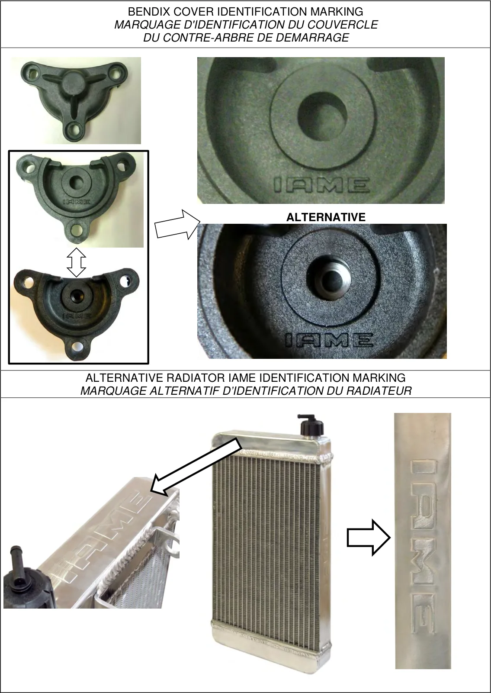
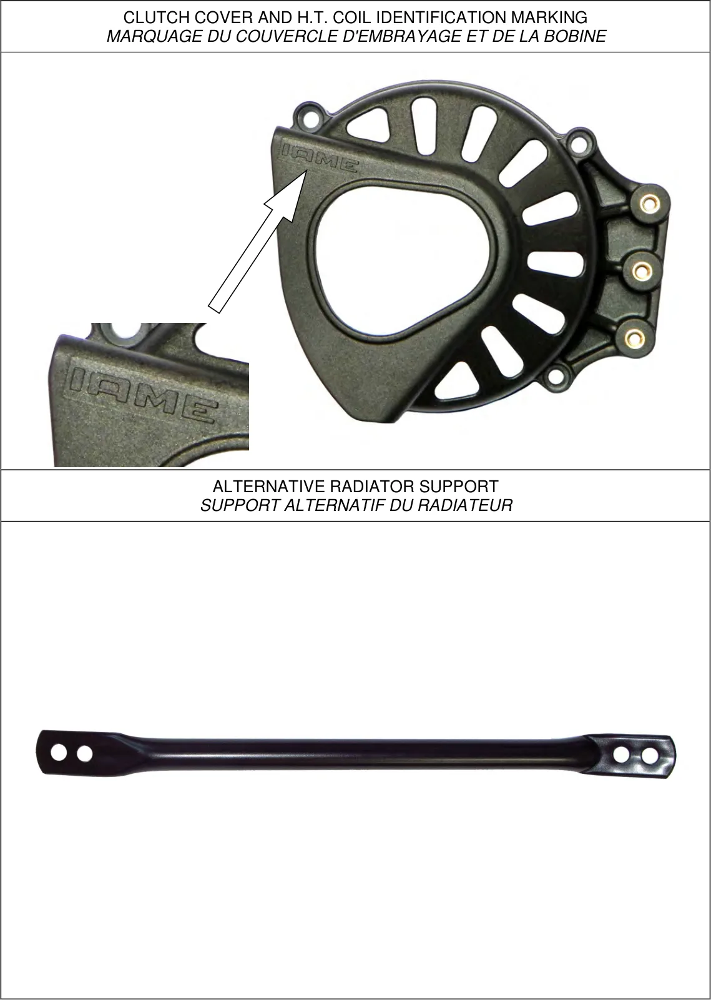
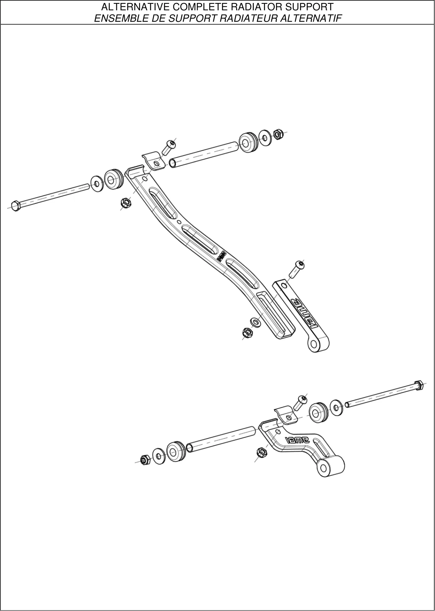
| FROM 2014 ON - A PARTIR DE 2014 | |
| STICKER APPLICATION AREA - ESPACE POUR L'APPLICATION DES ADHÉSIFS | |
| ALTERNATIVE AREA / ZONE ALTERNATIVE | |
| EXHAUST TEMPERATURE SENSOR CAPTEUR DE TEMPERATURE D’ECHAPPEMENT | CYLINDER CROSS SECTION VIEW VUE EN SECTION DU CYLINDRE |
| EXHAUST TEMPERATURE SENSOR POSITION (OPTIONAL) POSITION DU CAPTEUR DE TEMPERATURE D’ECHAPPEMENT (EN OPTION) |
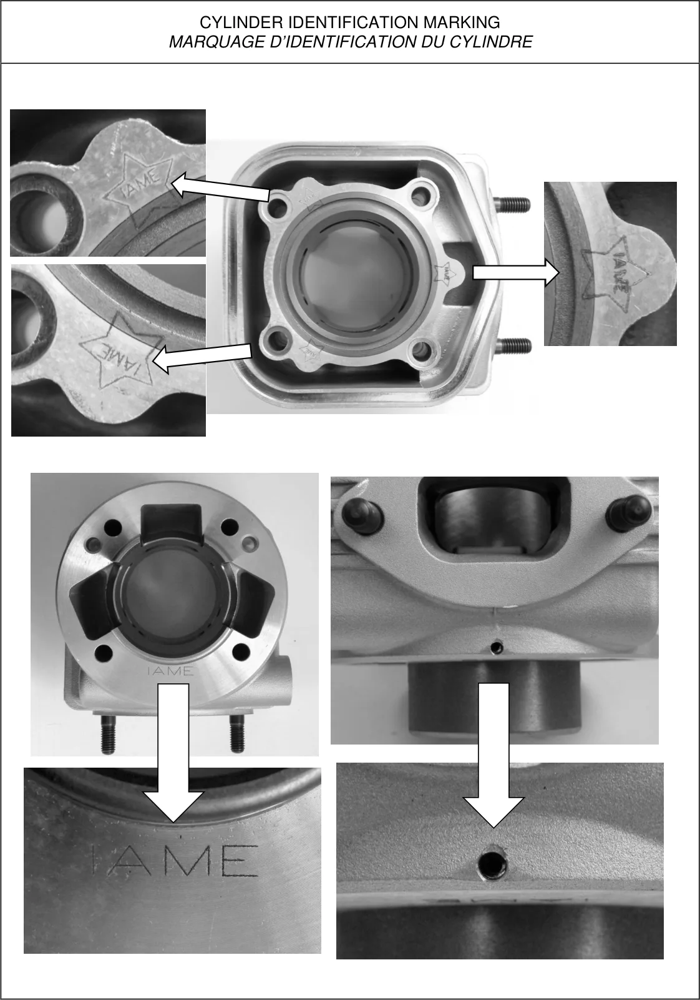
P.28CYLINDER BASE ALTERNATIVE MARKING MARQUAGE ALTERNATIF DU LA BASE CYLINDRE
ALTERNATIVE
VARIABLE
P.29FROM 2025 ON - A PARTIR DE 2025
CYLINDER IDENTIFICATION – ALTERNATIVE CYLINDER LINER LOCK PIN IDENTIFICATION DU CYLINDRE – GOUPILLE DE BLOCAGE DE LA CHEMISE ALTERNATIF
CURRENT PIN (SPRING PIN) GOUPILLE COURANTE (GOUPILLE À RESORT)
ALTERNATIVE PIN (GROOVED PIN) GOUPILLE ALTERNATIF - (GOUPILLE CANNELÉE)
| FROM 2025 ON - A PARTIR DE 2025 | |
| CYLINDER IDENTIFICATION – ALTERNATIVE CYLINDER LINER LOCK PIN IDENTIFICATION DU CYLINDRE – GOUPILLE DE BLOCAGE DE LA CHEMISE ALTERNATIF | |
| CURRENT PIN GOUPILLE COURANTE SPRING PIN GOUPILLE À RESORT | ALTERNATIVE PIN GOUPILLE ALTERNATIF GROOVED PIN GOUPILLE CANNELÉE |
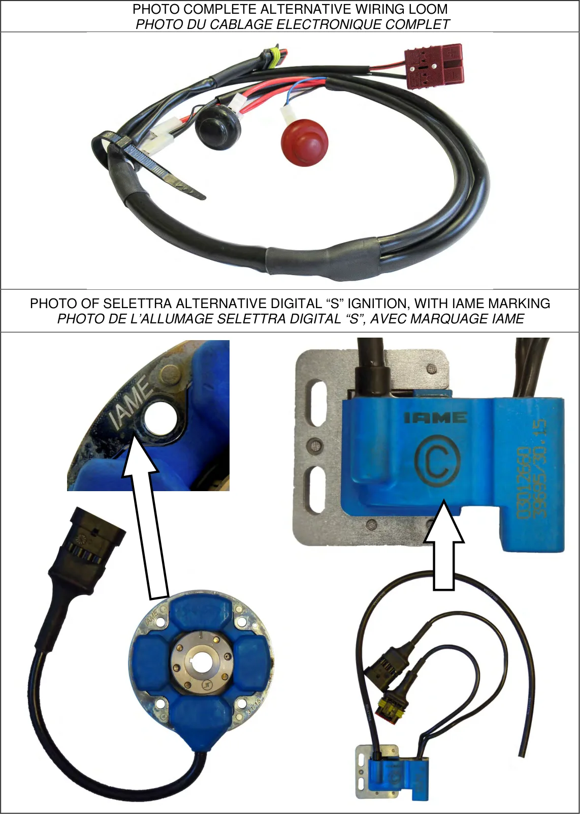
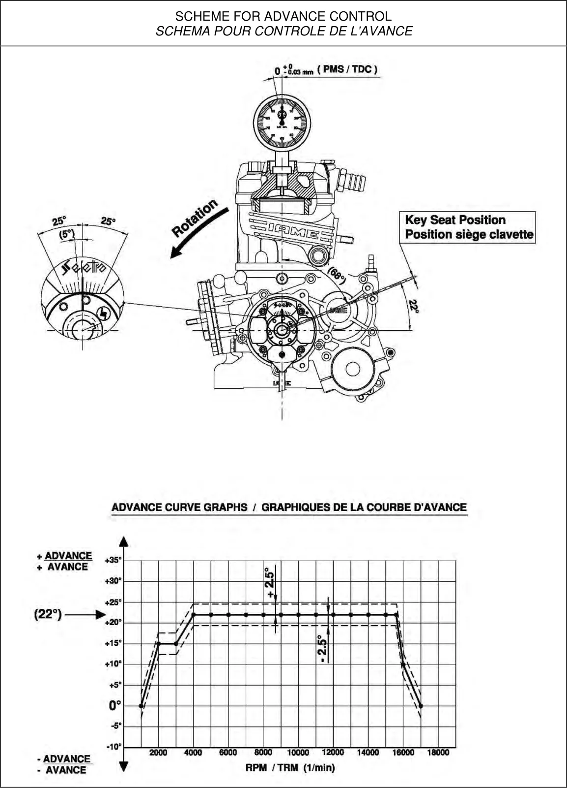
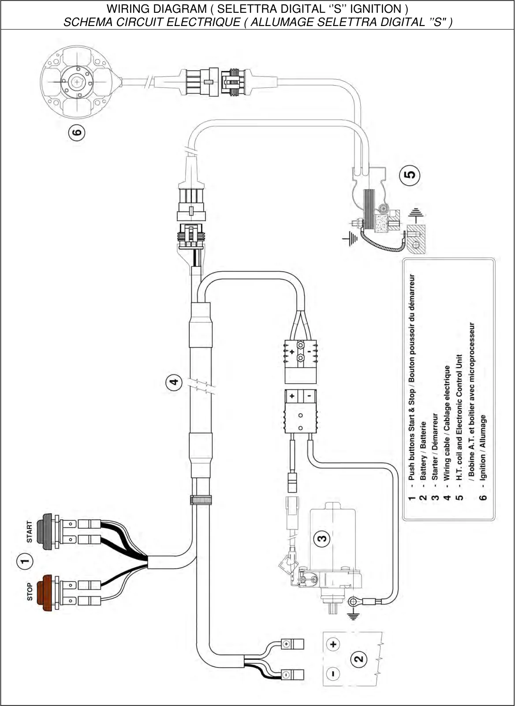
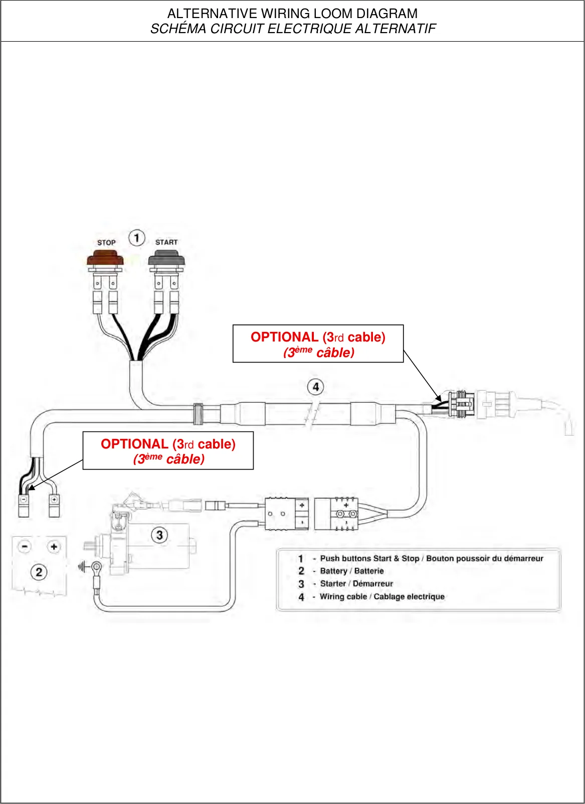
| PHOTO IDENTIFICATION REED GROUP PHOTO IDENTIFICATION BOÎTE À CLAPETS | |
| VERSION ACTUAL VERSION COURANTE | ALTERNATIVE VERSION VERSION ALTERNATIVE |
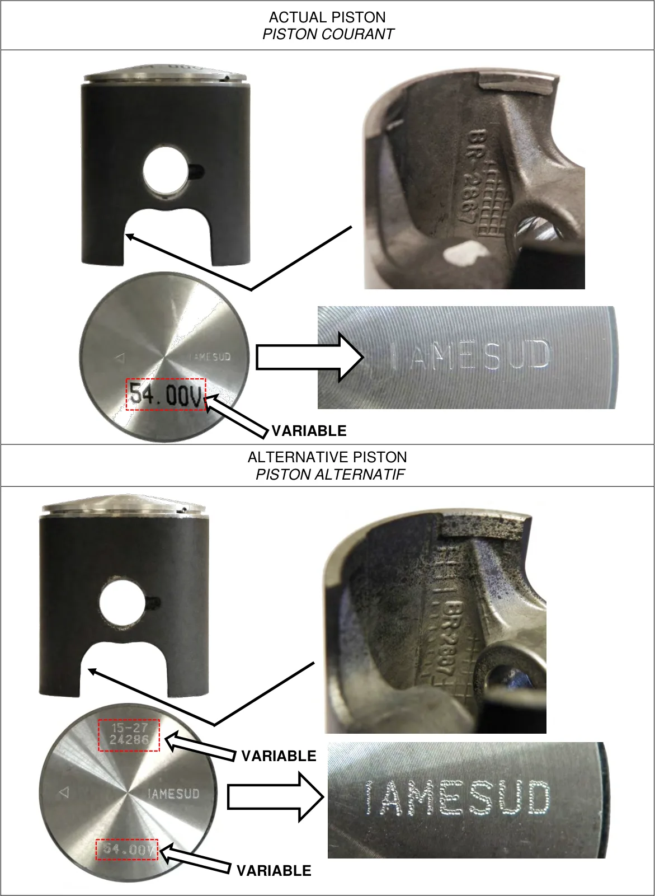
P.37ALTERNATIVE PISTON MARKING MARQUAGE ALTERNATIF DU PISTON
* *
VARIABLE
VARIABLE
ALTERNATIVE PISTON MARKING MARQUAGE ALTERNATIF DU PISTON
VARIABLE
VARIABLE
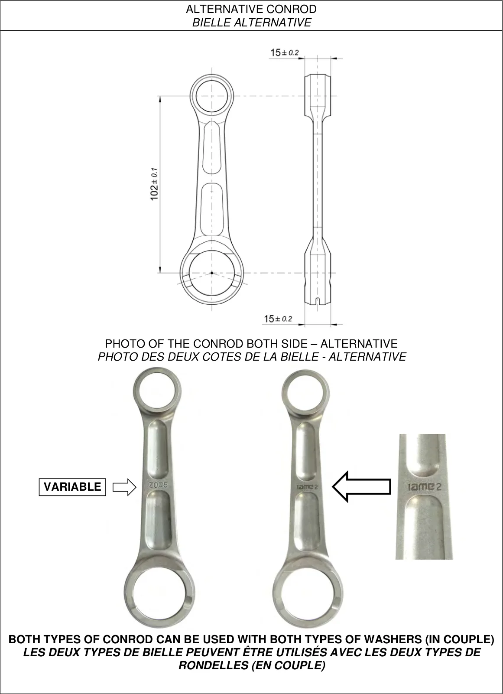
P.39PHOTO IDENTIFICATION OF SMALL END CONROD BEARING – TYPES ALTERNATIVE PHOTO D’IDENTIFICATION DU ROULEMENT PIED DE BIELLE – TYPES ALTERNATIFS
TYPE 1 TYPE 2
PHOTO IDENTIFICATION OF CONROD WASHER – TYPES ALTERNATIVE
PHOTO D’IDENTIFICATION RONDELLE BIELLE – TYPES ALTERNATIFS
TYPE 1 TYPE 2
P.40PARTS WITH ALTERNATIVE NEW LOGO “IAME” COMPOSANTS AVEC UN NOUVEAU LOGO ALTERNATIF «IAME»
| CYLINDER HEAD CULASSE | CYLINDER CYLINDRE |
| NEW / NOUVEAU LOGO | NEW / NOUVEAU LOGO |
| SEMICARTER TRANSMISSION SIDE DEMI-CARTER CÔTÉ PIGNON | SEMICARTER IGNITION SIDE DEMI-CARTER CÔTÉ ALLUMAGE |
| NEW / NOUVEAU LOGO | NEW / NOUVEAU LOGO |
P.41PARTS WITH ALTERNATIVE NEW LOGO “IAME” COMPOSANTS AVEC UN NOUVEAU LOGO ALTERNATIF «IAME»
| IGNITION COVER COUVERCLE DE L’ALLUMAGE | CLUTCH COVER COUVERCLE D'EMBRAYAGE |
| NEW / NOUVEAU LOGO | NEW / NOUVEAU LOGO |
| REED GROUP GROUPE CLAPETS | CARBURETTOR INLET CONVEYOR CONVOYEUR D’ADMISSION |
| NEW / NOUVEAU LOGO | NEW / NOUVEAU LOGO |
P.42PARTS WITH ALTERNATIVE NEW LOGO “IAME” COMPOSANTS AVEC UN NOUVEAU LOGO ALTERNATIF «IAME»
| EXHAUST SILENCER ECHAPPEMENT | RADIATOR RADIATEUR |
| NEW / NOVEAU LOGO NEW / NOUVEAU LOGO | NEW NOUVEAU LOGO |
| BALANCING SHAFT ARBRE D’EQUILIBRAGE | |
| NEW / NOUVEAU LOGO |
P.43THE OTHERS COMPONENTS OF ENGINE THAT ARE MARKED (LASER OR PUNCHING) UNTIL TODAY WITH LOGO OR WRITTEN “IAME”
LES AUTRES COMPOSANTS DU MOTEUR AVEC COMME MARQUAGE (LASER OU POINÇONNEUSE) L’ANCIEN LOGO OU ÉCRIT «IAME»
or
IAME
NOW COULD BE MARKED WITH NEW LOGO “IAME”
POURRAIENT MAINTENANT ETRE MARQUES AVEC LE
NOUVEAU LOGO “IAME”
or
or
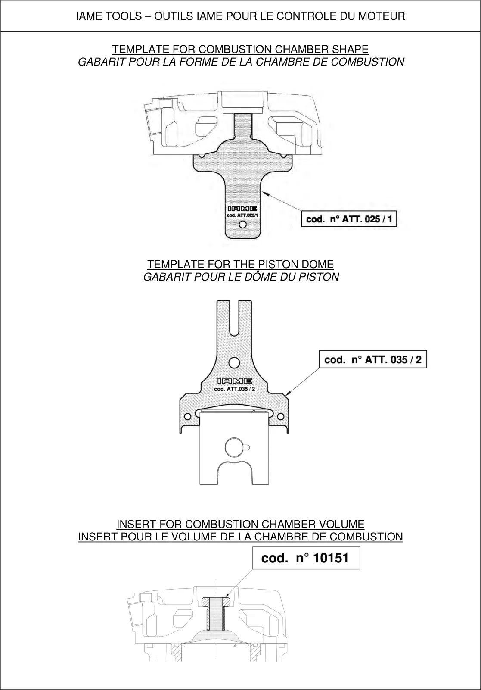
P.45NO GO GAUGE FOR THE HEIGHT OF EXHAUST PORT AND LATERAL TRANSFERS GABARIT POUR LA HAUTEUR DE LA LUMIÈRE D’ÉCHAPPEMENT ET DES TRANSFERTS
LATÉRAUX
CHECKING TOOL FOR PORTS IN THE CYLINDER LINER GABARIT POUR LES LUMIÈRES DANS LA CHEMISE DU CYLINDRE
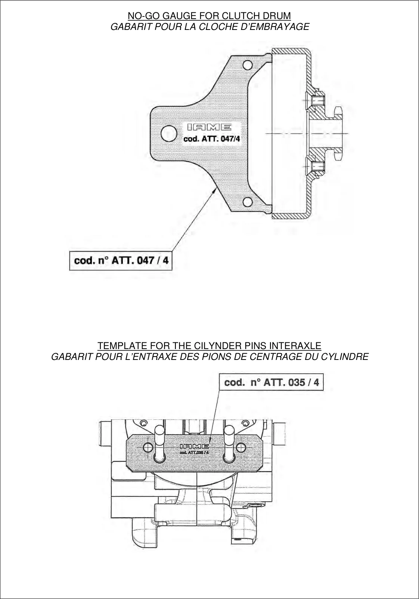
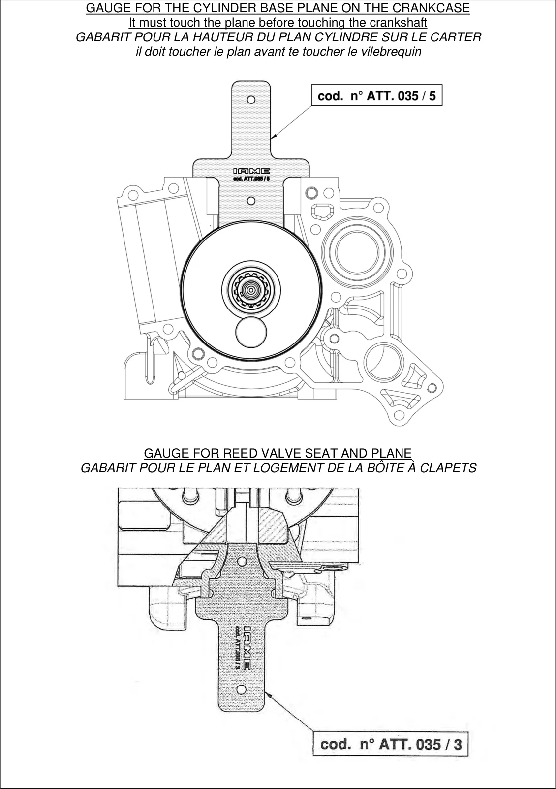
P.48TEMPLATE FOR THE MARKING POSITION ON SELETTRA DIGITAL "S" ROTOR
OK when the marking is hidden by the template
GABARIT POUR LA LE MARQUAGE DE PHASE SUR LE ROTOR SELETTRA DIGITAL “S”
OK si le marquage est couvert par le gabarit
TEMPLATE FOR THE VENTURI SHAPE OF TILLOTSON HW-27A CARBURETTOR
GABARIT POUR LE VENTURI DU CARBURATEUR TILLOTSON HW-27A
P.49GAUGE FOR THE HEIGHT OF THE ATOMISER – IT MUST ENTER GABARIT POUR LA HAUTEUR DU PULVERISATEUR - IL DOIT ENTRER
ATT.035 / 12
NO GO GAUGE FOR THE HOLE OF THE NOZZLE
GABARIT POUR LE TROU DU PULVERISATEUR
GO Side – must enter
Côté GO – doit entrer
NO GO Side – must not enter Côté NO GO – ne doit pas entrer
ATT.035 / 19
P.50EXHAUST MANIFOLD CHECKING TOOL - CONTRÔLE DU RACCORD D’ECHAPPEMENT
THE NO-GO GAUGE MUST NOT ENTER INTO THE EXHAUST RESTRICTOR, (FIG.2); LE GABARIT NE DOIT PAS ENTRER DANS LE TROU DU RESTRICTEUR D'ECHAPPEMENT.
THE SHAPE OF THE DUCT IN THE HEADER MUST MATCH WITH THE TEMPLATE, (FIG.1,3 AND 4). LA FORME DU CONDUIT DANS LE COLLECTEUR TOIT ÊTRE LA MEME QUE L’OUTIL
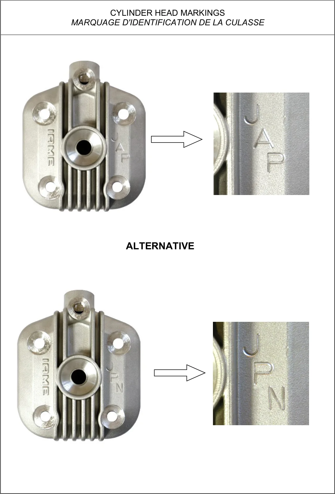
VOIDS AND REPLACES THE FORM n° 246/Q OF 13/11/24. 12/12/25 n° 246/R ANNULE ET REMPLACE LA FICHE n° 246/Q DU 13/11/24